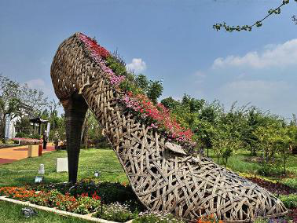
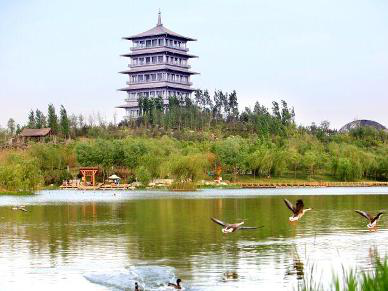

西安世博园位于西安市浐灞生态区广运潭，距西安市中心约10公里，是2011西安世界园艺博览会会址。西安世界园艺博览会闭幕后，经过半年改造，于2012年4月28日西安世博园免费对市民开放。西安世园会园区总面积418公顷（6270亩），其中水域面积188公顷（2820亩）。主要建筑有长安塔、创意馆、自然馆和广运门；五大主题园艺景点分别是长安花谷、五彩终南、丝路花雨、海外大观和灞上彩虹；三处特色服务区分别是灞上人家、椰风水岸和欧陆风情。2012年10月3日，西安世博园景区顺利通过4A级旅游景区认定，被国家旅游局评定为国家AAAA级旅游景区。
珍宝博物馆位于西安世博园主轴线上，整个展馆结合码头和周边场地进行设计，建筑布局呈“王”字型，由三翼不规则几何体组成，青铜金属、石材及花园式种植 屋面等不同饰面的无规则衔接处理，形成了错落有致、内涵丰富的艺术效果。
馆内主要展示古生物化石、矿物晶体、宝玉石、晚清古玉、红山文化古玉、名人字画以及其他珍品七大类2900余件高品质藏品，总投资超过2亿元。其中，“侏罗纪探奇之旅”大型恐龙展展出50余件古生物化石，如身长约6米的准格尔龙化石、身长1米长的鹦鹉嘴龙化石、17个连体的恐龙蛋化石等典型展品。还将展示身长13米，高约5米的“霸王龙”，身长约10米的“阿马加龙”，三角龙、牛龙、剑龙、风神翼龙等诸多姿态各异的仿真恐龙。
自然馆位于锦绣湖畔，是西安世博园内的植物温室，主要展示地球上不同地域、不同气候带的珍稀植物及生态景观。总建筑面积5316平方米。
自然馆处于许多特色景观的交会点，用以展示多种类植物及其生态景观，以及不同气候带下的典型植物景观。建筑半埋地下立面材料选用玻璃，木材与少量混凝土结合，倚山而建、层层叠叠，与地形完美结合，保证在建筑室内可以从不同高度领略湖面和对岸的美景。整个展馆分为两层，一层为热带雨林植物展示区、特色植物展示区，二层为沙漠植物展示区、珍稀植物展示区，展示了榕树、菩提树、黑黄檀、箭毒木、阴香树、无忧树、椰子树、鸡蛋花、光棍树、象腿树、地涌金莲、曼陀罗花等530多种奇花珍木。自然馆内的植物呈多层分布，上层喜光下层喜光半阴，有小乔木，也有灌木。这种分层设计叫做“生态位”，能使馆内植物各取所需，减少植物死亡率。自然馆里不仅有各种珍奇的花草树木，还有仙人掌成林的沙漠景观，按照仿生学制造的大型昆虫模型，以及各种色彩鲜艳、形状各异的蝴蝶和甲虫标本。热带雨林区还展示独木成林、空中花园、老茎生花、老干结果等奇特的自然现象。
儿童萌宠馆位于西安世博园秦岭园内,简称“萌宠馆”，由动物欢乐谷、猴山、熊乐园、鸟语林等四个场馆组成。馆中的动物笼舍与活动场地力求与周边自然地形巧妙结合，尽量做到藏而不露，露而不显。 在萌宠馆，您可以与19种300多只温顺型动物亲密互动，如梅花鹿、果下马、猕猴、小熊猫、黑熊、蓝孔雀、环颈雉、天鹅、鸸鹋、鹦鹉等，备受大家喜爱的羊驼也加入到世博园的大家庭中。带着您的孩子到世博园，感受动物与人的亲密友好，体悟自然之神奇美妙。
长安花谷是世博园的迎宾景点，设计者意图用不同的花卉展现从古至今人们对“天庭”五彩云霞美景的认识和想象。长安花谷总面积6.6万平方米，70余种奇花异草都种植在整个花谷区111个钻石面中，整个花卉根据钻石面的颜色搭配，会给大家呈现约35种以上颜色的视觉效果。长安花谷像碎了一地的神秘的五彩玻璃，棱角分明的花坛、地被、花境，将原来无奇的土地切割成看似不规则、散乱而实则有律可循的大花园。水流和"地流"互相穿插，通过将地面折叠，水渠、河道池塘等各种水景和台阶，座椅、小道等地景都被统一的建筑语言融入，成为园林的一部分。几何图案在这个平面上得到淋漓尽致的运用，突出的模纹花坛，尖锐、清晰的棱角，简洁、流畅的线条，玻璃、金属般的质感，无时不刻张扬着现代都市风格。
秦岭丰富的历史遗迹、宗教文化、诗词歌赋将在秦岭园中得到精彩再造和展示。园区结合周边地形地貌堆山叠石、理水种植，一切景点均截取秦岭山水片段建造，开阔且幽深，高峻且清雅，处处景致匠心独运，宛若天成. 在小终南山上，随处可见镌刻有古人描写秦岭风光诗词的石碑、石崖，秦岭的山水文化令人赞叹回味。园内的清幽道观，与五大主题园艺景点之五彩终南和长安塔一 起，共同构建出秦岭独特的宗教文化景观和氛围，让人体验到“北山白云里，隐者自愉悦”的恬淡，和“众鸟高飞尽，孤云独去闲”的从容。动物欢乐谷、猴山、熊乐园和鸟语林四个动物笼舍与活动场地力求与周边自然地形巧妙结合，尽量做到藏而不露，露而不显。这里有19种300多只温顺型动物亲密互动。让游客感受动物与人的亲密友好，体悟自然之神奇美妙。为展示秦岭丰富的植物景观特色，结合园区山水地形，秦岭园将种植樟树、杜仲、厚朴、红豆杉、鹅掌楸、紫阳大叶泡、迎红杜鹃、香团刺、白皮松、海棠，玉兰、垂柳、国槐、皂角、连香树、栓皮栎、绒苞榛、太白紫荆、云杉、毛竹、猕猴桃、桂花、榔榆桩景、银杏、海棠、紫薇古树、棕榈、修竹、核桃树、油桐树、柿子树、板栗树、合欢、七叶树、白桦、油松、柔毛绣线菊、褐穗莎草、紫斑牡丹、羽叶丁香等国家濒危植物30余种，陕西省保护植物40余种。走进秦岭园，宛如走进了一座树木葱茏、山花烂漫、绿草如茵、富有季相变化的珍稀植物园和都市大氧吧，令人流连忘返。
步入关中园，别具陕西民俗特色的各类石器，如磨盘、饮马槽、拴马桩、石羊、石俑、石鼓、石碾等被巧妙利用起来。园中摆放盆景的“架”由磨盘堆叠而成，道路由大大小小的磨盘铺就，行走其间，仿佛在数着岁月的年轮；造型各异的拴马桩，真实记录了关中农民的文化、生活、宗教、民族关系和审美情趣；更有意思的是那一个个饮马槽，被用来当做花盆，粗笨的马槽和优美的花草形成鲜明对比，妙趣横生。
红豆杉主题园总面积1075平方米，园内展示区分为室内、外两部分。室外部分充分的将红豆 杉以各种形式穿插其中，包括红豆杉灌木色带及多样式红豆杉盆栽等。园区内建有玻璃温室。详细介绍红豆杉的育苗、培育、生长的过程。另一方面介绍红豆杉的药 用价值及其提取“紫杉醇”的工艺流程。通过两个方面全面深入的介绍红豆杉这一濒危珍贵植物。在这里年轻人可以尽情领略“水晶宫”的超炫体验，感受“红豆杉 世界”带来的浪漫与神秘。老年人可以沿着红豆杉长廊的足迹，登上梦幻般的“水晶宫”，寻找红豆杉的遗迹，梳理生物变迁的脉络，感受养生之道，体验生命与健 康的和谐。儿童可以走进红豆杉王国，了解自然与生态的种种，在参与体验中与红豆杉零距离接触，感受植被的多样性，艺术的趣味性和生态保护的重要性。游客可在此选购各类纪念品。
西安世博园的“世界庭院”展区在约18000平方米的四面环水的小岛上，集合了古希腊园林、意大利台地园、法国古典主义园林、英国自然风景园和西班牙伊斯兰园林等，仿佛佛将游客送到了亚平宁半岛、不列颠群岛、斯堪的纳维亚半岛，或是柔美的塞纳河畔。
在遗址上感受历史，在林荫中解读神话，在行走中了解园林的雏形。世界庭院的入口处选择古希腊园林，是因为古希腊园林在形式上处于比较简单的初始阶段，但是在类型上比较丰富多样，是后世欧洲园林的雏形，现在的体育公园、校园、寺庙园林 等都能在古希腊园林里找到雏形；同时，也由于当时的数学和几何学以及相应的哲学的发展与影响，古希腊园林强调规则的形式，奠定了西方规则式园林的基础。
古希腊园位于世界庭院的北侧，占地约2000平方米。全园分为3个部分，从西向东依次为索罗斯广场、圣林、狮子门。希腊园以希腊德尔斐遗址广场（即索罗斯广场）为主体，以展示对西方建筑影响深远的希腊柱式以及完美比例的运用。在荫郁的树丛里散置着希腊神话的12主神雕塑，出于希腊神话对西方园林、绘画、文学 等艺术方面有着巨大的影响。很多艺术创作的题材都源于希腊神话。在东入口的地方设置文明世界的狮子门，它是古迈锡尼卫城的入口。两根稳健的石柱承载着笨重而略成弓形的石制横梁，横梁上面是巨石砌成的拱门，巨石的正面是一组浮雕：两只对称的狮子一左 一右以前足踏立在祭坛上，中间立着一根象征着宫殿的柱子。狮子门上的叠涩券，是世界上最早的券式结构遗迹之一，对以后的 建筑有着深远的影响。
意大利台地园是文艺复兴时期盛行开来的。多建造于城郊的丘陵地形上，用来满足富豪权贵们对风景秀丽环境中的户外生活的渴望。为了适应亚平宁半岛多山的地形，台地园采取了连续几层台地的布局方式，这样的处理也为园子带来动人的空间效果。地形决定了园区重要轴线的安排。早期庄园 中，各台层有独立的轴线而无联系各层之间的轴线。中期开始，则开始有贯穿全园的中轴线。同时，在轴线上安排水景、雕塑等，以丰富轴线。
在意大利台地园的设计时，我们截取罗马庄园建造盛期的三大庄园之一的法尔奈斯庄园的部分为主要骨架。采用中轴对称的构图形式。中间轴线是一条宽大的缓 坡，从平台到观景廊。海豚叠水分列两侧，中间是蜈蚣形的石砌水槽，构成系列跌水景观。第二层是椭圆形广场，两侧弧形台阶环绕着透光的喷水球，向中间水盘喷 水。正中有巨大的水钵，珠帘式瀑布从中流下，落在水盘中。水钵左右各有一座河神雕像，手握号角，倚靠水钵，守护着水景与观景廊。缓坡的两侧是在维兰迪城堡的“爱园”，以花语阐释人们的感情生活，表达了四个爱情主题。“悲情之爱”以男人决斗时所使用的匕首或剑的锋刃为图案，中间种 植着红色的花，象征着决斗中四溅的血液；“温柔之爱”像星星点点的火焰一样分割出许多象征温柔之爱的心形图案；“炽热之爱”虽然是心形图案，但却是一颗颗 破碎的心“轻浮的爱”位于四角的扇子象征着轻薄，扇子之间摆放着代表虚假爱情的牛角。黄杨篱组成的植物花坛，两座马匹塑像用来活跃气氛。花园的两面均有矮 墙，既限定了空间，又用作坐凳。墙上有16根神像柱。精细的做工，流动的水系以及，几何的植物，展示了园林的所有经典要素。
在西安世博园里，来自丹麦、西班牙、英国、德国、荷兰、中国等9个国家的顶尖设计大师齐聚“大师园”，向世园的八方游人呈现了一场创意园林的视觉盛宴。“大师园”代表了现代景观设计的潮流及趋势，堪称本届世园会最具创意的花园，也因此被誉为“会思考的园子”。
山之迷径园的设计灵感源自中国山水画，致力于构建一处人造景观，使其尽可能表现自然。整个园子呈一个三角形展开，三角形的山体上，树木等植物错落分布，密而不乱，为花园所选的材料全部取自天然。树木的排布考虑到了生长各需的小气候，松柏类种植在花园中地势较高的地方，花灌木和草本植物则种植在地势较低处。整个花园由藤编篱笆围合起来，以确保花园的私密性，并在其上爬满攀援植物。
"植物学家花园"是对E·H·威尔逊的缅怀。E·H·威尔逊是大不列颠最著名的植物引种家之一，在20世纪的前11年中他曾多次到享有"花园之国"美誉的中国考察。展园包括一系列的独特空间。前庭营造了从世园会的外部到花园内部空间的过渡。外院则种有水杉，在这些树林下，铺着一大片开花植物和蕨类植物，有红花绿绒蒿和全缘绿绒蒿。游客从外院可沿着散步道到达内院，这里设有一个圆形的围墙花园。在围合内，还有一个异国情调的花园，向游客展示成千上万种由E·H·威尔逊在中国各地搜集而来的植物。
这座花园里主要分布着墙体，其间点缀着一些开口，让人们可以一瞥前方花园那若隐若现的景色。花园的尽头有一扇月洞门，这也是对生命周期的隐喻。扭曲成型的松树似乎在挑战地心引力，证明它的万年长青。这种永恒与花园里植被的瞬间形成了对比。在园子里，游客可将植物种子撒播在砂砾地上，种子可在砂砾地上随意扎根和发芽，并呈现不同状态。无论何时何地，植物生命都是播种、繁殖和蔓生。
山水·中国地图园通过拓展边界，让游客置身于一个微观世界，通过现代样式，对花园艺术的传统主题进行演绎。园子遵循大型皇家园林的法则，微缩中国地图，但这不是传统意义上的微缩景观，而是把地图中的河流，不同高度的大地，全部转换成抽象的线条，再借助线条勾勒出轮廓线。随后的这些轮廓线赋予花园以形，制造三维立体的山水·中国地图。再精心布置着不同季节着色的植物组群，让植物的生长枯荣，给予地图生命力和中国山水画的意境。
每座园林都有一个故事。在这座园林中，生命是一条绵延不绝的蜿蜒小路，小路深入茫茫自然，带你去渡万座桥。整个园子由桥、小径和竹子组成，一条单方向的砾石小径只设一个入口和一个出口，贯穿全园。狭窄的小径象征着生命，带领参观者远离宽敞的大道和人群，深入茂密幽深的竹林，经过每座桥的桥上和桥下。万桥园五座桥共分高、中、低三种类型，一高、三中、一低。错落不一的桥，不正是人生的写照吗？跌宕起伏的桥，不正是人生路途的刻画吗？也正是有了这些跌宕起伏，让游人从不同的角度看到了不一样的风景，正是有了这些不一样的经历，人生大路的风景也才显得丰满精彩！
在中国，“土”的意义重大，中国文化源自黏土，黏土为西安的繁荣奠定了基础。黄土园中，设计师运用黄土、喷泉、石雕、泥塑等展示黄土地的自然气候、植物特色、文化理念。黄土园中最醒目的是一个不规则的平底水池，面积315平方米，深40厘米。池中绝大部分黄土从黄河收集而来，这个浅水池就像一个微型黄河河滩，游客在园中，可在其中行走。这个微型河滩也会展现丰水、干枯等不同河滩景态。园中的植被设计也很独特，昆虫、青蛙等小田园小动物也成为园子设计元素。每当晚风习习，竹林中的风声与青蛙的呱呱叫声糅合在一起，让人们尽情享受泥土的乐趣。
四盒园来自四合院的谐音。四盒园由春盒、夏盒、秋盒、冬盒四个不规则方块景观组成。踏进四盒园主要入口便进入“春盒”，景观主要是春意盎然的竹丛；“夏盒”则是葡萄藤爬满了花架；“秋盒”由石头砌筑而成，其地面比中心庭院高出了1米，墙上有许多正方形的窗洞，形成一个个画框。“冬盒”是由青砖砌筑而成的盒子，里边白色沙石地面，如同冬雪。在“冬盒”，透过砖墙上的空洞，也可以看到“春盒”外的竹丛。